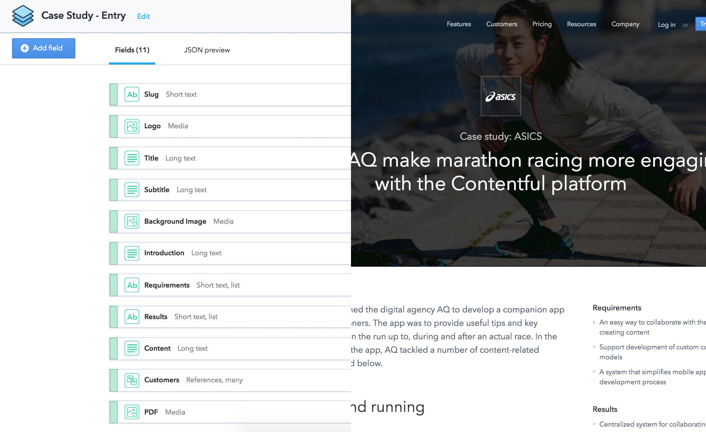
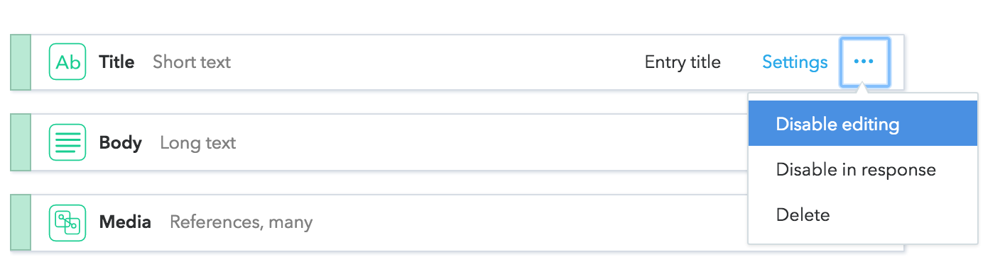

Content model changes
done the right way

By Rouven Weßling
Rouven Weßling
Developer Evangelist
lover of APIs, whisky and cake
Content modelling
You can think of the content model as the "stencil" for the "drawing" that will be your content.
We think in unstructured content
Contentful is all about structured content
How do we get from unstructured to structured?
- What content will I have?
- What are the semantics of it?
- What auxiliary information do I need?
- What structure serves both my software and my editors?
Nobody gets it right the first time
When you can’t have perfection, the next best thing is change.
Making changes to a space
What could go wrong?

How do I make sure I do the same change in dev, staging and production?
Contentful Migration CLI 🚚
What you can do
- Create content type
- Delete content type
- Edit content type
- Create/edit/delete fields
- Change field ID
How to
Description files
Advantages
- Repeatable
- Dry-runs
- Can be kept in version control
- Sanity checks
- Use CI to apply.
Demo
This is just the beginning of our migration tooling
Please give us feedback 🙏
Rouven Weßling
Twitter: @RouvenWessling
Email: rouven@contentful.com